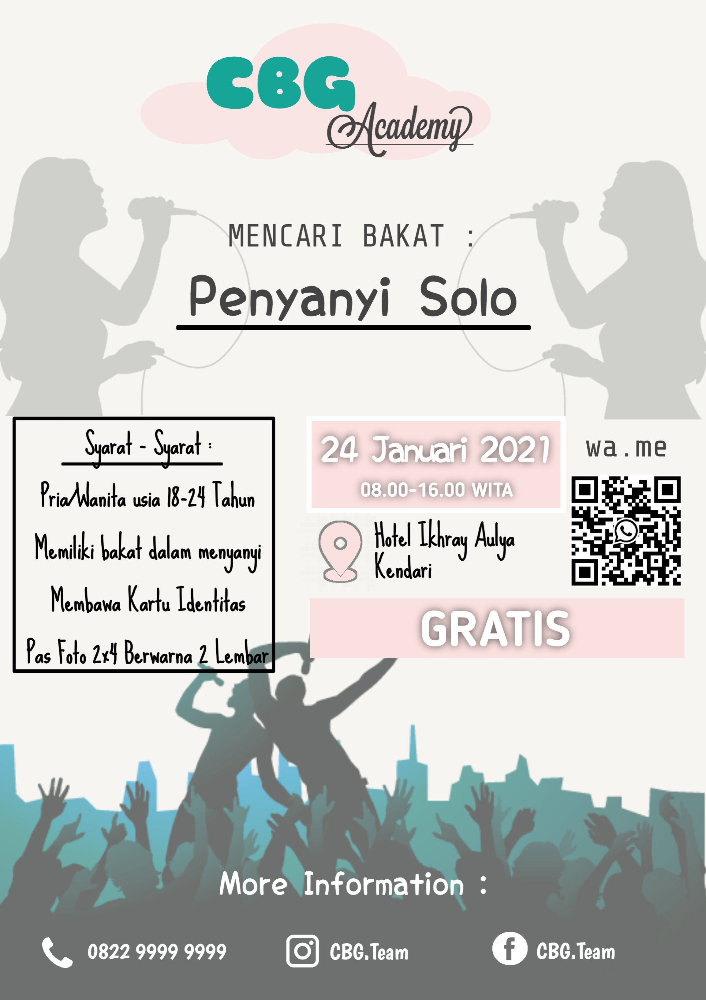

Pencarian Bakat CBG Academy

Gambar 1. Poster Penerimaan Bakat
Cover Boys Girls (CBG) Academy baru - baru ini membuat sebuah ajang pencarian bakat. Ajang pencarian bakat ini bertujuan untuk mencari bakat unggul di bidang tarik suara, yang kemudian akan dibina oleh CBG Academy untuk dipromosikan ke indutri hiburan tanah air. Ini merupakan pertama kalinya CBG Academy membuat acara pencarian bakat. Hal ini tentu saja dikarenakan umur CBG akademi yang masih belia yakni baru 1 tahun berdiri. Pencarian bakat ini merupakan usaha dari CBG Academy untuk menghasilkan penyanyi solo profesional yang akan didorong untuk bersaing di industri tarik suara Indonesia.
Pencarian bakat ini sendiri rencananya akan dilaksanakan pada Minggu, 24 januari 2021 bertempat di Hotel Ikhray Aulya pukul 08.00-16.00 WITA. Adapun persyaratan pendaftaran pada ajang ini yaitu rentang umur 18-24 tahun dan membawa kartu identitas serta pas foto sebanyak 2 lembar. Salah satu hal yang terpenting dari ajang ini yaitu tidak dipungut biaya sama sekali alias gratis. Ini tentu sangat menarik dimana jika berhasil pada ajang ini dijanjikan proyek yang cukup baik dimana pemenang akan dilatih di CBG Academy.
Untuk informasi lebih lanjut, peminat dapat menghubungi nomor yang tertera pada poster maupun sosial media resmi dari CBG Academy
Catatan : Artikel ini dibuat untuk memenuhi tugas akhir mata kuliah Praktikum Aplikasi Komputer dan segala isinya hanyalah fiktif belaka.
NAMA : MUHAMAD AMHAR RAYADIN
NIM : E1E120037